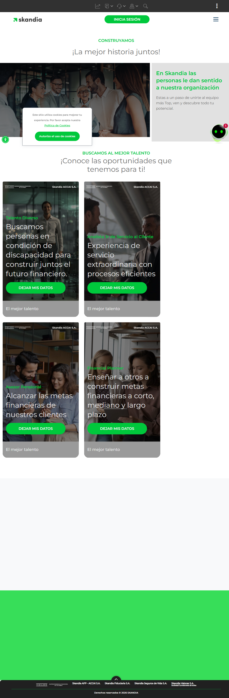

Auditoría del estado actual, benchmark de 6 referentes y mapa de oportunidades que alimentan la propuesta de proceso de la Etapa 2.
Contexto estratégico, objetivos, alcance y supuestos del sprint.
Talento Humano identificó que la sección pública de vacantes de Skandia (skandia.co/nuestras-vacantes) no cumple su función: es un formulario Typeform de 5 campos (nombre, teléfono, correo, área de interés, hoja de vida) sin ninguna estructura de gestión detrás. Las hojas de vida llegan a un correo, sin base de datos ni forma de filtrar, notificar al área correspondiente o dar seguimiento. No existe descripción de cargo, lo que genera aplicaciones desubicadas (ej. un economista no sabe si aplicar a inversiones, operaciones o finanzas) y aplicaciones duplicadas. Skandia no tiene presencia de empleos en LinkedIn porque su foco institucional histórico ha sido la captación de leads/clientes, no de colaboradores — este proyecto es también una oportunidad de cambiar esa conversación internamente.
| Stakeholders | Talento Humano (dueños del reto), equipo UX/UXplorers (ejecutor), áreas contratantes (ventas, tecnología, servicio al cliente, operaciones), New Hub / administradores del sitio (Liferay). |
| Impacto esperado | Reducir la fricción y el desorden operativo de la recepción de CVs, mejorar la experiencia del candidato, y dar a Talento Humano un proceso administrable sin inversión en plataforma externa. |
Principal: identificar patrones de diseño y de proceso —en portales de empleo de referentes del sector financiero colombiano y de empleadores digitales aspiracionales— que permitan proponer un proceso sistémico de gestión de vacantes para Skandia, desde la publicación hasta el cierre de la posición.
Secundarios: diagnosticar en detalle las brechas del estado actual · extraer del benchmark patrones aplicables sin plataforma externa · traducir los hallazgos en un mapa de oportunidades priorizado para la Etapa 2.
| Tipo (Playbook) | Identificar. No hay diseño previo que validar ni se busca explicar motivaciones profundas de comportamiento — el objetivo es detectar patrones y oportunidades del mercado vía benchmarking. |
| Fuente primaria | Sitio público skandia.co/nuestras-vacantes (auditoría directa, sin usuarios). |
| Comparables directos | Bancolombia, Davivienda, Sura, Protección (sector financiero colombiano). |
| Aspiracionales | Mercado Libre, Nubank (UX de carreras reconocida). |
| Metodología | Auditoría heurística del estado actual · benchmarking (selección de 6 referentes + 7 criterios, análisis individual, matriz comparativa) · insights en formato Observación → Interpretación → Implicación → Oportunidad. |
No se realizaron entrevistas con candidatos en este sprint — el playbook no lo exige para un proyecto tipo Identificar de alcance acotado; se recomienda como posible sprint futuro tipo Validar una vez exista un prototipo.
skandia.co/nuestras-vacantes — capturado 2-jul-2026.

| # | Hallazgo |
|---|---|
| 1 | Hero institucional ("Construyamos ¡La mejor historia juntos!") + 4 tarjetas fijas: Talento Diverso, Analista Jr. de Servicio al Cliente, Asesor Pensional, Financial Planner. No hay listado dinámico ni más vacantes visibles. |
| 2 | Las 4 tarjetas —incluida "Talento Diverso"— apuntan al mismo formulario Typeform embebido. Solo cambian los parámetros UTM de tracking, no el contenido que ve el candidato. |
| 3 | Formulario genérico de 5 campos: nombre, teléfono, correo, área de interés, hoja de vida. Sin pregunta de experiencia ni descripción del cargo antes de aplicar. |
| 4 | Sin información del cargo: solo título y frase de misión, sin requisitos, beneficios ni contexto de vicepresidencia/equipo. |
| 5 | Sin filtros por ciudad, área o tipo de contrato — justo lo que pidió Talento Humano (ej. "vacantes en Cali"). |
| 6 | Sin integración con LinkedIn: Skandia no tiene pestaña de empleos, solo presencia institucional genérica. |
| 7 | Sin persistencia de datos: las hojas de vida llegan a un correo; no hay base de datos, panel de gestión ni notificación automática al área. |
6 referentes, 7 criterios, navegación en vivo hasta la ficha de vacante y el flujo de aplicación.
Se analizaron 4 comparables directos del sector financiero colombiano (Bancolombia, Davivienda, Sura, Protección) y 2 aspiracionales por su UX de carreras (Mercado Libre, Nubank).
| Referente | Arquitectura | Ficha | Aplicación | Filtros | Employer branding | Accesib. | Promedio | |
|---|---|---|---|---|---|---|---|---|
| Skandia (actual) | 1 | 1 | 3 | 0 | 2 | N/D | 0 | ~1.2 |
| Bancolombia | 7 | 9 | 5* | 8 | 6 | 7 | 4 | 6.6 |
| Davivienda | 4 | 7 | 3 | 6 | 5 | 5 | 6 | 5.1 |
| Sura (Seguros/AM) | 4 | 8 | 5 | 6 | 8 | 6 | 5 | 6.0 |
| Protección | 4 | 8 | 3 | 7 | 6 | 5 | 6 | 5.6 |
| Mercado Libre | 8 | 9 | 9 | 8 | 9 | 7 | 5 | 7.9 |
| Nubank | 7 | 9 | 9 | 6 | 8 | 7 | 4 | 7.1 |
* Bancolombia: flujo funcional pero sobre plantilla Taleo genérica que diluye marca.
Ficha de vacante ejemplar: reto/perfil/beneficios con cifras concretas de compensación (14,12 salarios legales + hasta 47,37% variable, días de vacaciones). Filtros avanzados, alertas de vacantes por correo. Pero la identidad de marca fuerte del landing se diluye casi por completo al entrar a la plantilla genérica de Taleo.
Landing de marca propia, pero externalizado 100% a Magneto365 (ATS compartido con múltiples empresas). Ficha con buen nivel de detalle pero tono inconsistente entre vacantes. El flujo de aplicación exige crear cuenta antes de ver el formulario — alta fricción.
Sin portal único: el visitante salta entre trabajaconnosotros.sura.com (abandonado, 0 resultados desde 2020), empleos.sura-am.com (búsqueda poco confiable) y finalmente Magneto para la marca Protección. Employer branding fuerte en el landing regional, pero fragmentado en la ejecución.
Mismo patrón que Sura: su microsite es solo employer branding en texto, sin buscador funcional; las vacantes reales y el flujo de aplicación viven enteramente en Magneto365. Gate de registro obligatorio antes de ver el formulario o adjuntar CV — la mayor fricción medida en todo el benchmark (3/10).
Salto de dominio transparente porque el diseño visual se mantiene coherente. El referente mejor puntuado: ficha con feature diferenciador de "perfil típico de contrataciones anteriores" (años de experiencia, skills, empresas previas), formulario de un solo submit sin crear cuenta, y employer branding con testimonios reales en video.
Ficha y formulario en una sola página (sin wizard, sin cuenta), múltiples formas de adjuntar CV (archivo, Dropbox, Google Drive o texto manual), video de cultura embebido directamente en la ficha del cargo.
6 insights en formato Observación → Interpretación → Implicación → Oportunidad.
Lo que alimenta directamente la Etapa 2 — Propuesta de proceso.
El problema es de proceso y contenido, no solo de diseño visual. El benchmark confirma que ningún competidor directo resuelve esto solo con una tarjeta bonita — todos tienen, como mínimo, ficha de vacante estructurada y algún tipo de backend de gestión (propio o tercerizado).
Skandia puede superar a sus comparables directos sin replicar su complejidad técnica. Davivienda, Sura y Protección arrastran fricciones (registro obligatorio, pérdida de marca al saltar a un ATS externo) que Skandia puede evitar de entrada si diseña el flujo pensando en el candidato, tomando como referencia los patrones de Nubank y Mercado Libre.
Hay un piso mínimo no negociable: ficha de vacante con descripción real del cargo, filtro por ciudad/área, y un backend con estructura de datos (aunque sea simple) que notifique al área correspondiente. Sin esto, cualquier ajuste visual será cosmético.
La integración con LinkedIn puede esperar a una segunda fase — el benchmark muestra que ni los líderes del sector lo resuelven bien, así que no es donde está la brecha más urgente.
vacantes-propuesta.md): el service blueprint end-to-end y la arquitectura de información del nuevo portal.